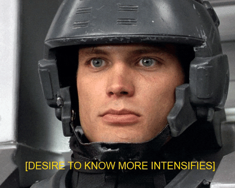

Tannor Breitigam
Hey there 👋
Welcome to my website! Come learn more about me and how I make cool things with code.
who i am
I'm a full-stack software engineer in Portland, Oregon. I have a diverse background which includes coding bootcamp, financial service at non-profits, and getting my MBA.
I'm into difficult puzzles and good design. I'm not concerned with a specific tech stack, but rather motivated by working with passionate and uplifting people.
I'm open to both full-time and contract opportunities right now. Talk to me.
what i'm good at
- frontend web development (I absolutely love TypeScript and building pixel-perfect CSS)
- backend development (I'm experienced in designing semantic and intuitive APIs, especially in serverless environments)
- writing SQL (for nearly 10 years now, since I taught myself as a student worker in college)
- scripting and automation (in my free time I like to write automations on my phone in javascript or with iOS shortcuts)
- analytical thinking, but also empathetic, clear communication
languages and technologies
- TypeScript, JavaScript, Node (anything JavaScript adjacent)
- React, Next.js, Redux
- Tailwind, Material UI
- semantic HTML and CSS (either plain old CSS or whatever system you're using)
- Scala, Python
- SQL (mostly PostgreSQL) and noSQL systems like DynamoDB
- GraphQL, Apollo, URQL, RESTful APIs
- AWS (S3, Lambda, AppSync, CloudFormation, SQS, SNS, etc)
some things i've built
OpenDelta App
A live, responsive dashboard app for a cryptocurrency startup that I architected and built from scratch for a client (NextJs, TypeScript, & MaterialUI) (development ongoing)Elite Commercial Door Landing Page
A landing page I built for a client's commercial door business (AstroJs, Typescript, Decap CMS). Designed by Dustin Witzel.Ball is Lyf3
A companion app for my private ESPN fantasy basketball league to compare weekly stats across all teams
SongBird
A simple markdown editor for lyrics that always displays the entire song (this is a basic app I use on my laptop when jamming; it's not recommended on a narrow screen)And more...
Take a look at my Github repositories page to see more cool things (or an embarrassing array of old projects that likely don't work anymore, you decide).where i've worked
I'm an independent contractor who works with all types of clients.
My last full-time gig was at high-growth fintech, FlowFi, where I was the only cold hire on the engineering team, and moved quickly from junior to mid. I regularly contributed to every layer in the stack, front to back.
Flow Finance
Software Engineer, Full Stack
~ Jul 2022 to Jan 2023 ~- Built internal backend (Lambda function built in Scala, exposed through GraphQL with API Gateway, using DynamoDB for storage) and frontend (TypeScript and React) services that handled 3rd-party OAuth connections and ingest of customer data
- Created RESTful APIs with web hooks to promote continued communication with existing connections
- Rebuilt an existing Go app in Scala to transform and export customer data as PDFs or spreadsheets
- Helped out with frontend development as needed and during crunch time
Junior Software Engineer, Frontend
~ Jul 2021 to Jul 2022 ~- Developed the new frontend page (TypeScript, React, Redux) for customers to manage member access and permissions on the FlowFi platform
- Helped greenfield a new app for accountants to automate their processes, saving time and reducing cost
- Created major customer-facing features, troubleshot bugs, and worked closely with our product and design teams to improve user experience
Higher Education IT & IS
In my pre-coding days, I worked in various tech-adjacent admin roles, both for Walla Walla University and University of Redlands. I wrote SQL, managed BI systems, and performed IS/IT support and maintenance for my department. I also filled in as interim Director of Institutional Research at WWU.
what i've studied
full-stack web development
- graduated from App Academy (a world-class 1000+ hour coding bootcamp) in 2021
business admin & finance
- earned an MBA with a Finance concentration from University of Redlands
- and before that a BBA (Bachelor of Business Administration) from Walla Walla University
how to reach me
Would you like to know more? Send me an email 👇
